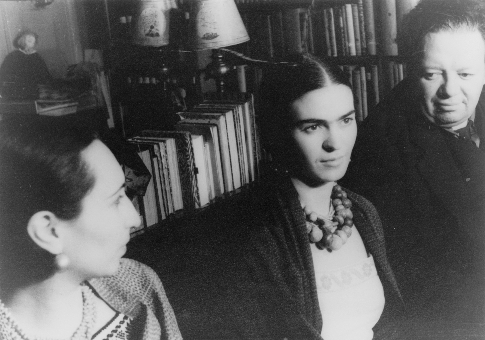

Ribbon around a bomb
The life and art of Frida Kahlo

Creative Commons photo taken by Guillermo Kahlo, 16 October 1932.
Biography
Mexican surrealist painter Friday Kahlo's life began and ended in Mexico City. Her work has been celebrated internationally as emblematic of Mexican national and indigenous traditions, and by feminists for its uncompromising depiction of the female experience and form.
Mexican culture and tradition are important in her work, which has been sometimes characterized as naïve art or folk art. Her work has also been described as surrealist, and in 1938 André Breton, principal initiator of the surrealist movement, described Kahlo's art as a "ribbon around a bomb". Frida rejected the "surrealist" label imposed by Breton, as she argued that her work reflected more of her reality than her dreams.
Kahlo had a volatile marriage with the famous Mexican artist Diego Rivera. She suffered lifelong health problems, many of which were caused by a traffic accident she survived at the age of eighteen. Recovering from her injuries isolated her from other people, and this isolation influenced her works, many of which are self-portraits. Kahlo suggested, "I paint myself because I am so often alone and because I am the subject I know best."
Text from Wikipedia.
Timeline
- 1907: Frida Kahlo is born in Mexico.
- 1913: Frida, age 6, contracts polio. Her right leg is affected and becomes deformed.
- 1922: Frida attends the National Preparatory School in Mexico City and learns about famous muralist Diego Rivera, who is working on a piece at the school’s lecture hall.
- 1925: Frida sustains several intense injuries after the bus she was riding is struck by a train. Her pelvic bone and spinal column are broken, and the next few months are spent in bed as she recovers.
- 1927: Frida becomes romantically involved with Diego Rivera.
- 1928: Frida joins the Communist Party.
- 1929: Frida becomes Diego Rivera’s third wife. She becomes pregnant but must terminate the pregnancy because of her medical issues. She paints her self-portrait “Time Flies,” establishing her style.
- 1934: After complications from another failed pregnancy, Frida loses her appendix and the ends of the toes on her right foot. She also discovers that Diego is having an affair with her younger sister.
- 1937: Frida’s first public showing of work in her home country takes place when four of her pieces are hung in a group exhibit at the National Autonomous University of Mexico.
- 1938: Frida has her first big sale when collector and actor Edward Robinson buys four of her paintings. She traveled to New York for her first solo show, where half of the paintings are sold.
- 1946: Frida wins the National Prize of Arts and Sciences from the Ministry of Public Education.
- 1950: For nine months she stays in the hospital and has seven operations on her spine.
- 1953: Frida has the first solo exhibition of her work in Mexico. Her doctor tells her that she is not well enough to attend, but she goes anyway in a bed carried by four men. Later that year her right leg is amputated.
- 1954: Her health declines and she dies in her house.
- Source: Frida Kahlo Fans Chronology.
Frida Kahlo, Without Hope (Sin esperanza), 1945. Oil on canvas. Image used with permission: Creative Commons license.
Portrait of Malu Block, Frida Kahlo and Diego Rivera. Creative Commons photo taken by Carl Van Vechten.